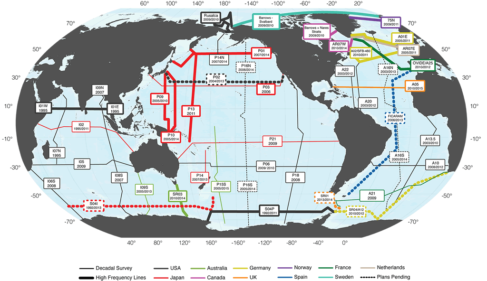

GO-SHIP Reference Sections are repeat hydrographic sections that are coast-to-coast or coast-to-ice, follow standard WOCE lines with small modifications as necessary for territorial waters, ice coverage, etc., and maintain the standard WOCE sampling strategy. Sections not labelled decadally are repeated more frequently (1-3 years).
May 2010 Reference Section Table (PDF)
Last updated: Dec 2012
(decadal) Section is re-occupied on a decadal timescale.
Click labels on the map to jump to the section in the tables.
| Section | Description (ship track) | Most Recent Occupations | Next Occupation |
|---|---|---|---|
| A01E/AR7E this section | Greenland to Ireland |
2011 H. van Aken Netherlands |
|
| A01W / AR7W this section | From Labrador to Greenland 53°N 56°W to 61°N 48°W; 1/year (spring) |
2010 G. Harrison (Chief Sci / bio); I. Yashayaev (phys); K. Azetsu‐Scott (chem.) Canada 2010 and 2011 (August) M. Rhein Germany |
2014 |
| A02 (SFB-460) this section | ~ 48° N, Ireland to St John’s Bay, Canada. |
2007 (full line) M. Rhein Germany 2009 (western part) M. Rhein Germany |
2010-13 M. Rhein Germany |
| A05 (decadal) this section | 24° N (note: this line is part of the UK RAPID program with repeats every ~ 5 years). |
2010 P. Velez Spain |
2015 |
| A9 1/2 (decadal) this section | 24°S |
2009 B. King UK |
|
| A10 (decadal) this section | 30°S | ||
| A12 this section | Capetown to the Antarctic continent along the prime meridian; often done in a pair with SR04. | ||
| A13.5 (decadal) this section | 0°; Cape Town to Ghana |
2003 M. Hoppema Germany |
|
| A16N (decadal) this section | 20-25° W Iceland to 5° S |
2011 Brian King UK |
2012 R. Wanninkhof USA |
| A16S (decadal) this section | 25-35° W, 5° S to 60° S |
2013 R. Wanninkhof USA |
|
| A20 (decadal) this section | 52°W | ||
| A21 (decadal) this section | Drake Passage |
2009 E. McDonagh UK 2009 C. Provost France (full physics, chem., and tracers) |
|
| A22 (decadal) this section | 66°W | ||
| FICARAM (A17) this section | Ushuaia - Cartagena (Spain), following part of the line WOCEA A17 and from 10°S to 36°N along 28°W |
2006 A. Rios Spain |
2013 A. Rios Spain |
| OVIDE (A25) this section | Iberian Peninsula - Greenland |
2008 A. Rios Spain 2010 H. Mercier France |
|
| SR1b (eastern passage) this section | Drake Passage (note: SR1b repeated annually with CTD, SADCP, LADCP) |
2009 E. McDonagh UK 2010 E. McDonagh UK |
2013/2014 |
| SR04 this section | Section from tip of Antarctic Peninsula to Kapp Norvegia (approx 12° W) along the northern edge of the Weddell gyre (nominally 60° S); often done as a pair with A12. |
2009/10 B. King UK 2011 E. Fahrbach / M. Hoppema Germany / Netherlands |
| Section | Description (ship track) | Most Recent Occupations | Next Occupation |
|---|---|---|---|
| P01 this section | 47° N |
2014 |
|
| P02 this section | 30° N |
2013 J. Swift USA |
|
| P03 (decadal) this section | 24°N; Okinawa to San Diego. |
To be conducted by JMA. Japan |
|
| P06 (decadal) this section | 30°S |
2010 Ruth Curry USA |
|
| P09 this section | 137°E | ||
| P10 this section | 147°E | ||
| P13 this section | 165°E | ||
| P14N (decadal) this section | Aleutians intersection with P01 and Northward. |
Plan is for approximately decadal occupation of P14 by Japan. |
|
| P14S/C (decadal) this section | 174°E (done along with S04I / S04P) |
2013 T. Kawano Japan |
|
| P15S (decadal) this section | Equator - 50°S 175°W (strategy calls for section to go to 67°S when possible). |
2015/2016 Australia |
|
| P16S (decadal) this section | 150°W (55°N-15°S / 15°S to ice S) | ||
| P16N (decadal) this section | |||
| P16N this section |
2008 Emerson USA |
||
| P16 this section |
2014 R. Feely/J. Swift USA |
||
| P18 (decadal) this section | 110° W |
unknown |
|
| P21 (decadal) this section | 17°S |
Plan is for decadal occupations Japan |
|
| SR03 this section | Tasmania to Antarctic Continent, 140 - 145°E |
2008 S. Rintoul Australia 2010 S. Rintoul Australia |
|
| S04P (modified) this section | Nominal 67°S; McMurdo to Punta Arenas; connects to S04I and SR04 (Atlantic) with sections from 67 to the continent along P14, P15, P16, and P18. |
| Section | Description (ship track) | Most Recent Occupations | Next Occupation |
|---|---|---|---|
| I01E this section | 8° N, Sri Lanka to Singapore |
Unknown |
|
| I01W this section | 8° N, Oman to Sri Lanka |
Unknown |
|
| I02 + I10 (decadal) this section | I02 (10° S) + I10 (8° - 25° S at 111° E) *note: may be changed to I8N + I5E + I10 for security reasons |
2011 A. Murata Japan |
|
| I05 (decadal) this section | 32° S, Durban to Freemantle |
Unknown |
|
| I06S (decadal) this section | 30° E Cape Town to Antarctic Continent |
Unknown |
|
| I07N (decadal) this section | 65° - 55° E, Oman to Mauritius |
Postponed indefinitely for security reasons |
|
| I08S this section | 95 - 82° E from 27° S to Antarctic Continent |
Unknown |
|
| I09N (decadal) this section | 95° E, 28 - 4° S |
Unknown |
|
| I09S this section | 115° E |
2013 S. Rintoul Australia |
|
| S04I this section | Section connecting I09S and S04P at ~ 60° S; S04/S04I + P14S, 62° S (33.5° E-168° E) + 174° E |
2013 T. Kawano Japan |
| Section | Description (ship track) | Most Recent Occupations | Next Occupation |
|---|---|---|---|
| 75*N this section | Iceland - Greenland. |
2009 T. Johannessen and A. Olsen Norway 2011 T. Johannessen and A. Olsen Norway |
|
| Barrows and Nares Straits this section | Barrow Strait (74.09° N 90.44° W to 74.83° N 93.00° W); Nares Strait (occupied irregularly) |
2009 J. Hamilton Canada 2010 J. Hamilton Canada |
|
| Barrow to Svalbard this section | Barrow Alaska to Svalbard Norway |
2005 L. Anderson Sweden |
2012 L. Anderson Sweden |
| Davis Straits this section | Baffin Island to Greenland |
2009 C. Lee and B. Petrie USA and Canada 2010 C. Lee and K. Azetsu-Scott USA and Canada |
|
| RUSALCA this section | Bering and Chukchi Seas |
2009 R. Woodgate USA 2010 R. Woodgate USA |
{kind=link}